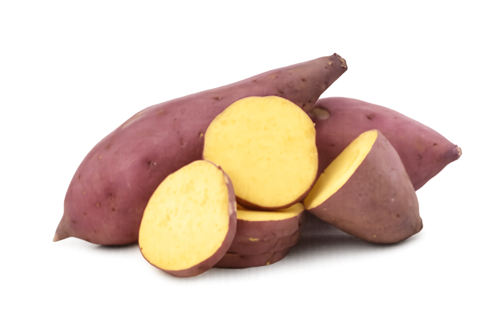
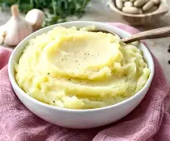
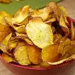

América Central e do Sul: A batata-doce tem sua origem na América Central e do Sul, sendo cultivada há mais de
5.000 anos. Ela era um alimento fundamental para civilizaçõespré-colombianas, como os Incas e Maias, e foidomesticada
no Peru por volta de 8000 a.C. A batata-doce foi introduzida na Europa pelos exploradores espanhóis no século XVI.
Preparação do solo: O solo deve ser leve, fértil, bem drenado e com boa aeração para produzir raízes mais uniformes e bonitas.
Seleção das ramas: Retire 1 ou 2 pedaços de rama de 20 a 30 cm a partir da ponta de plantas com até 90 dias de cultivo, preferindo as pontas para maior vigor.
Corte das ramas: Corte as ramas no dia anterior ao plantio para que murchem levemente, facilitando o enraizamento.
Umedeça o solo: No momento do plantio, o solo deve estar úmido para favorecer o crescimento das mudas.
Plantio com bengala: Use uma bengala em formato de “U” invertido para ajudar a enterrar de 3 a 4 nós da rama, deixando a ponteira com as folhas para fora da terra.
BRS Cotinga: Casca e polpa arroxeada intensa, ampla adaptabilidade a ambientes de cultivo.
CIP BRS Nuti: Casca rosada e polpa alaranjada, alta estabilidade de produção.
BRS Rubissol: Plantas vigorosas, casca de cor púrpura intensa e polpa de cor creme, tendendo ao amarelo. Muito produtivas.
| Nutriente | Porcentagem | Gramas |
|---|---|---|
| Carboidratos | 95.27% | 28,20 g |
| Proteinas | 4.39% | 1,30 g |
| Lipídeos | 0.34% | 0,10 g |
Rica em Nutrientes: A batata-doce é uma excelente fonte de vitamina A, vitamina C, manganês, cobre e vitaminas do
complexo B. Esses nutrientes são essenciais para a função imunológica, saúde da pele e formação de colágeno.
Melhora a Saúde Digestiva: A batata-doce é uma excelente fonte de vitamina A, vitamina C, manganês, cobre e vitaminas
do complexo B. Esses nutrientes são essenciais para a função imunológica, saúde da pele e formação de colágeno.
Controle do Diabetes: A batata-doce possui um índice glicêmico baixo, o que ajuda a regular os níveis de açúcar no
sangue e a reduzir os picos de insulina. Isso a torna uma ótima opção para diabéticos e para quem busca controlar o apetite.

Batata doce assada:
Purê de batata doce temperado:

Chips de batata doce:
